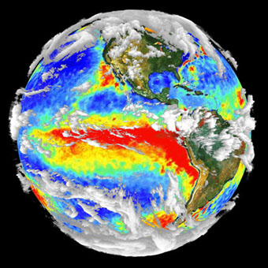
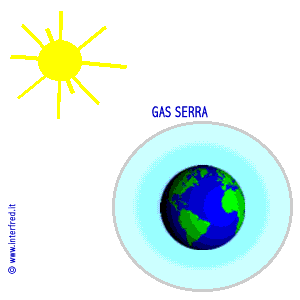

Effetto Serra


L'effetto serra è un fenomeno atmosferico-climatico che indica la capacità di un pianeta di trattenere nella propria atmosfera parte dell'energia solare proveniente dal Sole.
Esso fa parte dunque dei complessi meccanismi di regolazione dell'equilibrio termico di un pianeta (o satellite) e agisce attraverso la presenza in atmosfera di alcuni gas, detti appunto gas serra, che hanno come effetto globale quello di mitigare la temperatura dell'atmosfera terrestre isolandola parzialmente dai grandi sbalzi o escursioni termiche cui sarebbe soggetta la Terra in loro assenza.
L'effetto serra terrestre è creato da una serie di fenomeni che interagendo tra di loro regolano costantemente il contenuto dei gas serra in atmosfera, e proprio grazie all'effetto serra terrestre è possibile la presenza e lo sviluppo della vita sulla Terra.
Perché si parla di effetto serra? Il problema è causato dall'eccessiva presenza di questi gas nell'atmosfera tale da causare l'aumento della temperatura terrestre. I principali gas serra sono l'anidride carbonica, il metano e il vapore acqueo. Questi gas svolgono due importanti funzioni:
- Filtrano le radiazioni provenienti dal sole, evitando in tal modo di far giungere fino alla superficie terrestre quelle più nocive per la vita
- Ostacolano l'uscita delle radiazioni infrarosse. I raggi solari rimbalzano sul suolo terrestre dirigendosi nuovamente verso l'alto. I gas serra presenti nell'atmosfera impediscono la loro completa dispersione nello spazio, facendoli nuovamente cadere verso il basso. Come una gigantesca serra.
Le responsabilità dell'uomo. Le emissioni di anidride carbonica sono il principale nemico da combattere. L'80% delle emissioni di anidride carbonica proviene dalla combustione del petrolio, del metano e del carbone. Un inquinamento cresciuto esponenzialmente con l'industrializzazione delle attività umane. Nel novecento, il livello di CO2 in atmosfera è aumentato del 40% rispetto al secolo precedente come conseguenza dello sviluppo dei trasporti (in particolare l'invenzione dell'automobile come bene di massa).
Il problema dell'effetto serra si aggrava ulteriormente considerando la terra come "sistema complesso". La CO2 ha una durata media in atmosfera di circa 100 anni. Se pure smettessimo oggi di produrre emissioni di CO2 non riusciremmo comunque a ridurre in breve tempo la presenza di anidride carbonica nell'atmosfera. Le reazioni dell'ambiente sono quindi discontinue e irreversibili e non mostrano immediatamente i loro reali effetti o conseguenze. Si accentuano i fenomeni meteo estremi come gli uragani, le tempeste e le inondazioni. Nessuno però può dire con certezza quali siano le reali conseguenze a livello planetario. Un motivo in più per affrontare con estrema urgenza il problema.